| Up | Prev | PrevTail | Tail |
This package is an implementation of the Z-transform of a sequence. This is the discrete analogue of the Laplace Transform.
Authors: Wolfram Koepf and Lisa Temme.
The Z-Transform of a sequence {fn} is the discrete analogue of the Laplace Transform, and
This series converges in the region outside the circle |z| = |z0| = limsup n→∞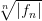.
| SYNTAX: ztrans(fn, n, z) | where fn is an expression, and n,z |
| are identifiers. |
The calculation of the Laurent coefficients of a regular function results in the
following inverse formula for the Z-Transform:
If F(z) is a regular function in the region |z| > ρ then ∃ a sequence {fn} with
{fn} = F(z) given by
| SYNTAX: invztrans(F(z), z, n) | where F(z) is an expression, |
| and z,n are identifiers. |
| This pack | age can compute the | Z-Transforms of the | following list of fn, and |
| certain combinations thereof. |
| 1 | eαn | 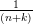 |
 | 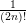 | 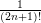 |
| 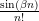 | sin(αn + ϕ) | eαn sin(βn) |
| 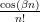 | cos(αn + ϕ) | eαn cos(βn) |
| 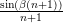 | sinh(αn + ϕ) | 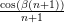 |
| cosh(αn + ϕ) | 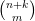 |
| Other Combinations |
| Linearity | {afn + bgn} = a{fn} + b{gn} |
| Multiplication by n | {nk ⋅ f n} = -z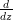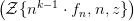 |
| Multiplication by λn | {λn ⋅ f
n} = F |
| Shift Equation | {fn+k} = zk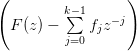 |
| Symbolic Sums | 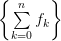 = 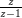 ⋅{fn} |
 combination of the above combination of the above |
| where k,λ ∈ N-{0}; and a,b are variables or fractions; and p,q ∈ Z or |
| are functions of n; and α, β & ϕ are angles in radians. |
| This | package can compute the Inverse | Z-Transforms of any rational function, |
| whose denominator can be factored over Q, in addition to the following list |
| of F(z). |
| sin 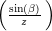e | cos 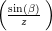e |
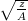 sin  | cos 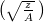 |
| 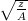 sinh 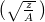 | cosh  |
| z log 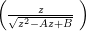 | z log 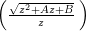 |
| arctan 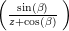 |
where k,λ ∈ N-{0} and A,B are fractions or variables (B > 0) and α,β, & ϕ are angles in radians.
Solution of difference equations
In the same way that a Laplace Transform can be used to solve differential
equations, so Z-Transforms can be used to solve difference equations.
Given a linear difference equation of k-th order
|
| (16.97) |
with initial conditions f0 = h0, f1 = h1, …, fk-1 = hk-1 (where hj are given), it
is possible to solve it in the following way. If the coefficients a1,…,ak
are constants, then the Z-Transform of (16.97) can be calculated using
the shift equation, and results in a solvable linear equation for {fn}.
Application of the Inverse Z-Transform then results in the solution of
(16.97).
If the coefficients a1,…,ak are polynomials in n then the Z-Transform of (16.97)
constitutes a differential equation for {fn}. If this differential equation can be
solved then the Inverse Z-Transform once again yields the solution of
(16.97). Some examples of these methods of solution can be found in
§16.77.6.
Here are some examples for the Z-Transform
Here are some examples for the Inverse Z-Transform
Examples: Solutions of Difference Equations
| I | (See [?], p. 651, Example 1). |
| Consider the | homogeneous linear difference equation |
| fn+5 - 2fn+3 + 2fn+2 - 3fn+1 + 2fn = 0 |
| with initial conditions f0 = 0, f1 = 0, f2 = 9, f3 = -2, f4 = 23. The |
| Z-Transform of the left hand side can be written as F(z) = P(z)∕Q(z) |
| where P(z) = 9z3 - 2z2 + 5z and Q(z) = z5 - 2z3 + 2z2 - 3z + 2 = |
| (z - 1)2(z + 2)(z2 + 1), which can be inverted to give |
| fn = 2n + (-2)n - cos n. |
| The following REDUCE session shows how the present package can |
| be used to solve the above problem. |
| II | (See [?], p. 651, Example 2). |
| Consider the | inhom | ogeneous difference equation: |
| fn+2 - 4fn+1 + 3fn = 1 |
| with initial conditions f0 = 0, f1 = 1. Giving |
| F(z) | = {1}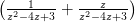 |
=  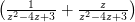. 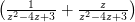. |
| The Inverse Z-Transform results in the solution |
fn =  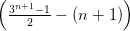. 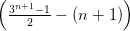. |
| The following REDUCE session shows how the present package can |
| be used to solve the above problem. |
| III | Consider the | following difference equation, which has a differential |
| equation for {fn}. |
| (n + 1) ⋅ fn+1 - fn = 0 |
| with initial conditions f0 = 1, f1 = 1. It can be solved in REDUCE |
| using the present package in the following way. |
[1] Bronstein,
I.N. and Semedjajew, K.A., Taschenbuch der Mathematik, Verlag Harri
Deutsch, Thun und Frankfurt(Main), 1981.
ISBN 3 87144 492 8.
| Up | Prev | PrevTail | Front |